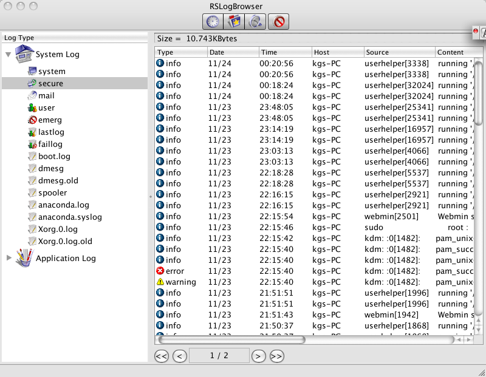

User Interface
|
 |
|
Figure1. User interface |
This program consists of the main window, the log list and toolbars.
1. Log List
All logs are classified to System Log , Application Log and Other Log.
2.
Toolbar
There are several tools to add, delete, search, filter and refresh.
3. Log View Window
It shows log size and contents.